Docker containers you choose
Containers are discovered, never watched by surprise. Switch on the ones that must stay up: if one stops or turns unhealthy for 30 seconds you get one message, and another when it is back.
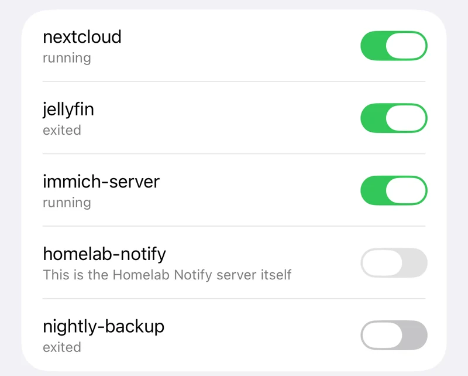
Self-hosted monitoring for one Ubuntu server. One problem, one notification. It reads, it never touches.
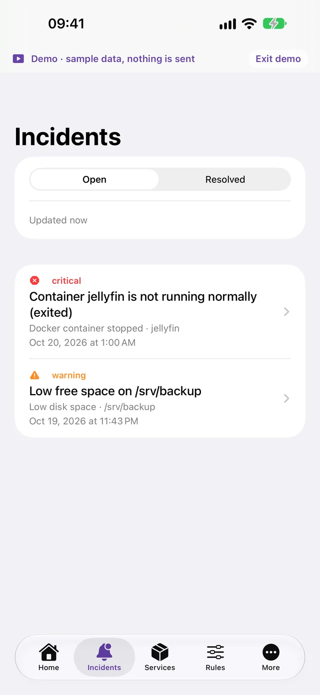
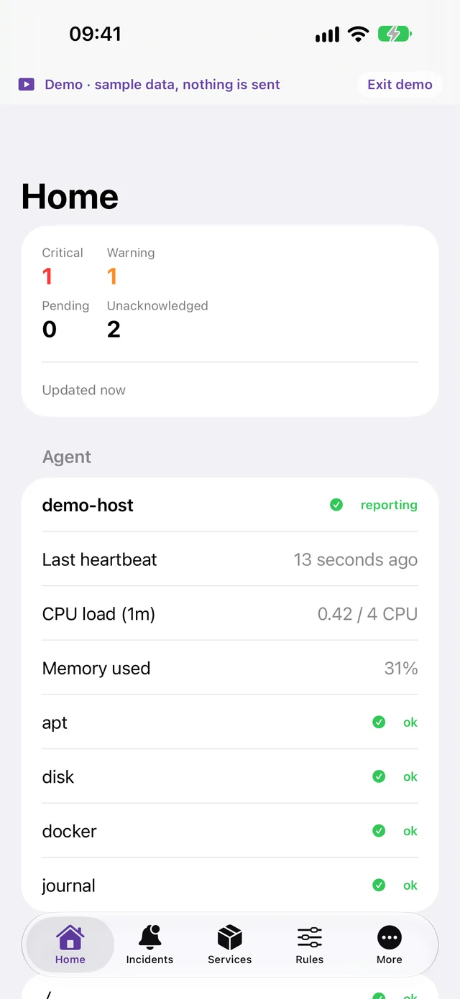
Sensible defaults from the first minute. Every threshold can be changed in the dashboard or the app.
Containers are discovered, never watched by surprise. Switch on the ones that must stay up: if one stops or turns unhealthy for 30 seconds you get one message, and another when it is back.

Measured on the real filesystems, not inside a container. Missing data shows as unknown, never as healthy.
Grouped by address, with a cooldown, so a scan is one warning and not a flood.
One digest a day at 09:00 when packages are pending. It reads the local APT cache and never runs apt update.
If the agent goes silent, that is an alert too.
180seconds
Minor notices wait for the morning; critical ones still arrive. Planned work is recorded without paging you.
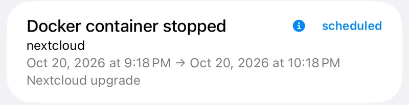
Monitoring needs no cloud service and no account. Push to your iPhone goes through a small relay that never sees what the alert says. If your internet goes down, the incidents are still recorded and delivered when it is back.
A small Go agent under systemd reads Docker, disk space, the SSH journal and the APT cache. It talks to the server over loopback only, and keeps a local queue if the server restarts.
systemd, unprivileged user, loopback only
A Go API with SQLite turns observations into incidents: opened once, notified once, closed when the check recovers. A durable outbox means no message is lost across restarts.
non-root, read-only filesystem, no Docker socket
Push notifications on your iPhone, messages on Telegram, and a web dashboard for rules and containers. The app pairs with a one-time QR code you approve.
Push, Telegram, dashboard
Open incidents at the top, then the host, disks, containers and updates. Choose what to watch, tune rules and schedule maintenance from any browser on your network.
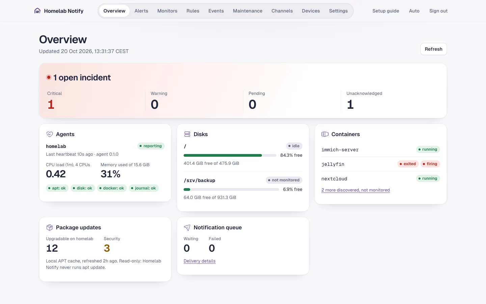
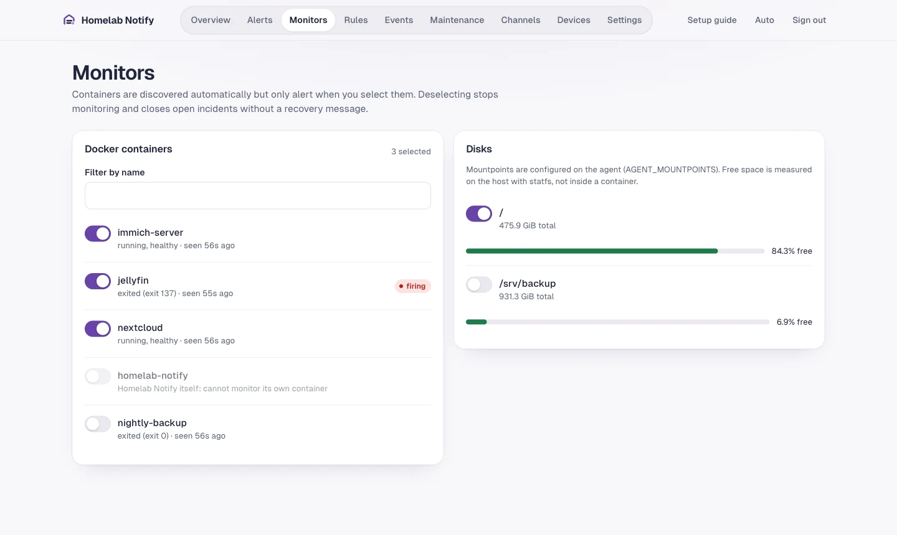
Screenshots from a local test server with sample data. The dashboard follows your light or dark setting.
Acknowledge incidents, choose what to watch, tune rules and plan maintenance. The app talks only to your server, and a built-in demo lets you try every screen without one.
Coming to the App Store for iPhone and iPad.
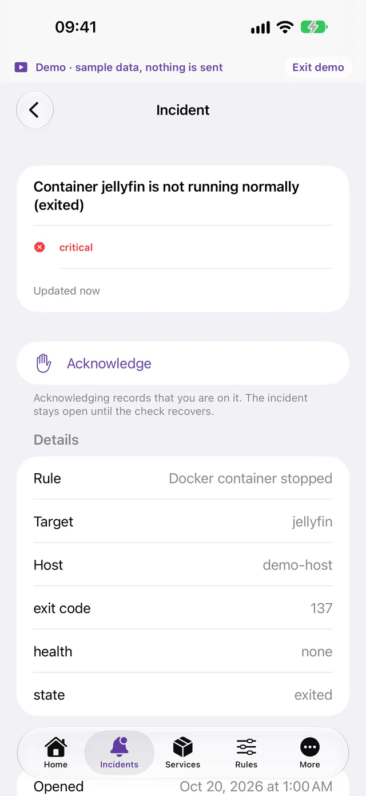
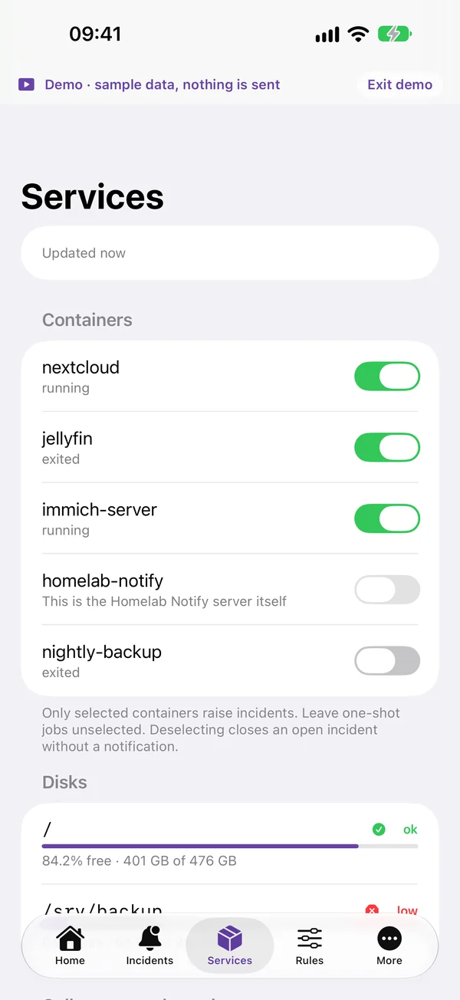
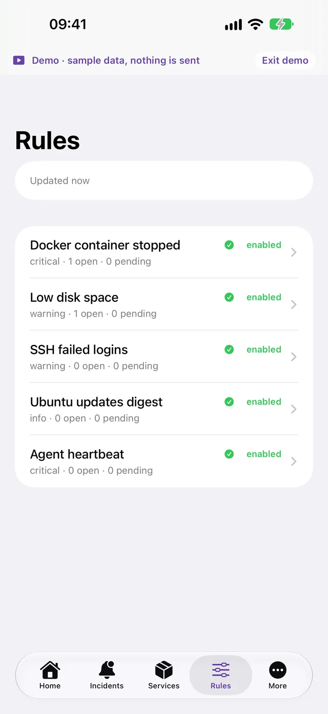
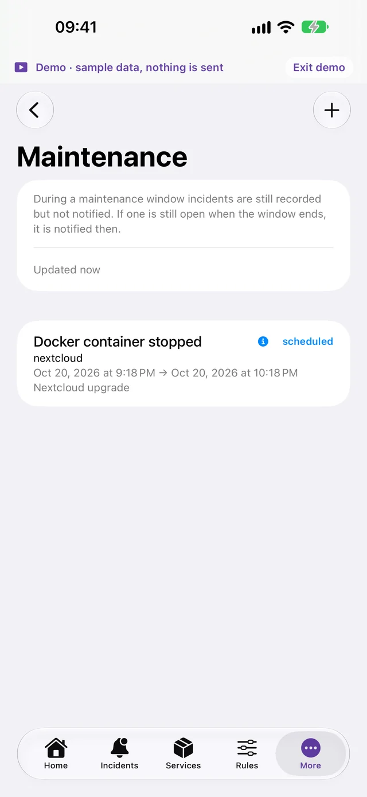
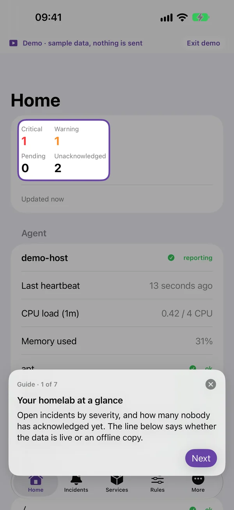
To pair the app, open the dashboard, go to Devices and choose Pair an iPhone. Scan the QR code with the camera, then approve the device in the dashboard. The code works once and expires after two minutes.
If the app shows an offline copy, it could not reach the server: check that the HTTPS address opens in Safari on the same iPhone.
Contact